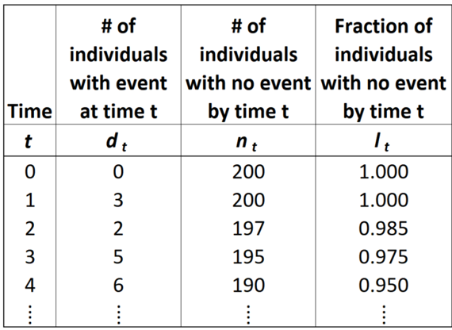
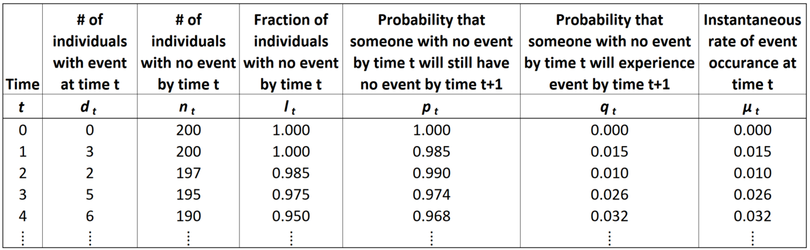
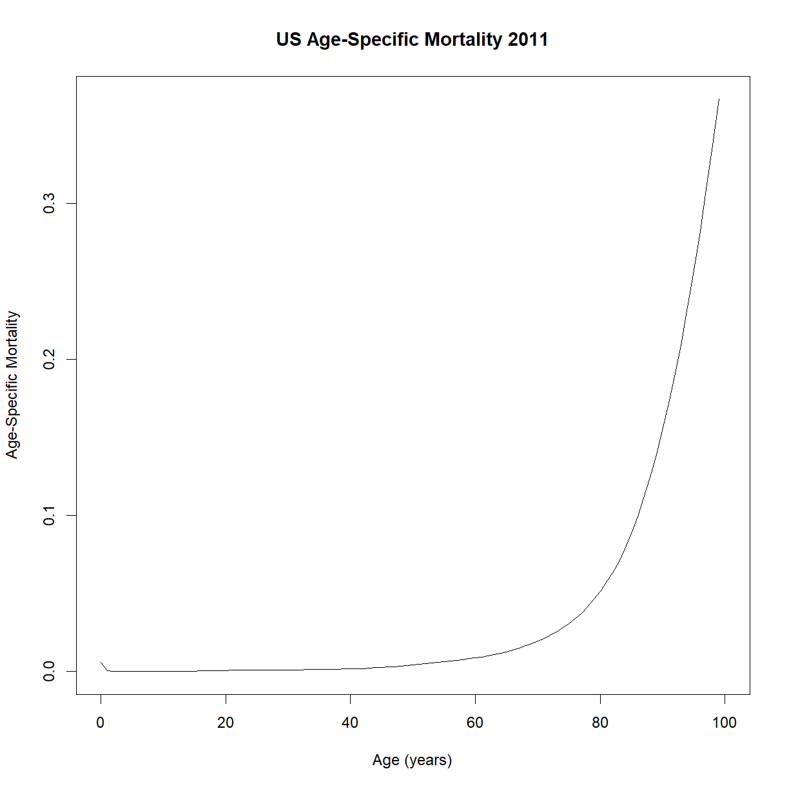
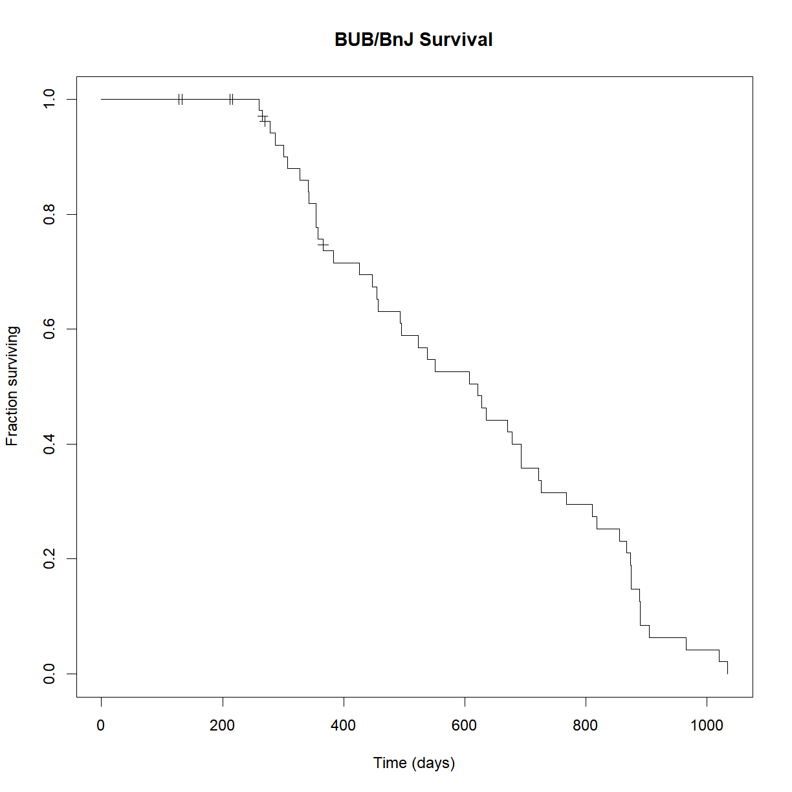
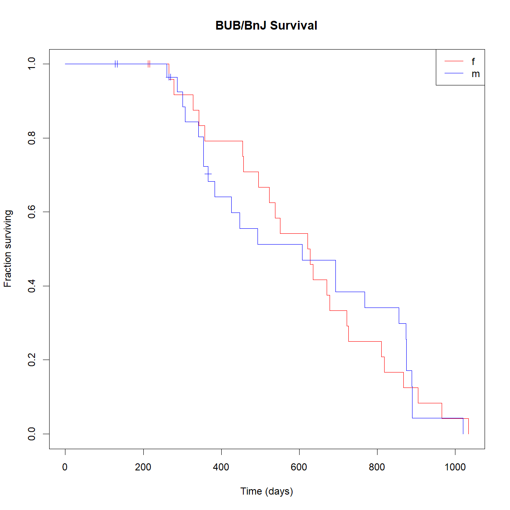
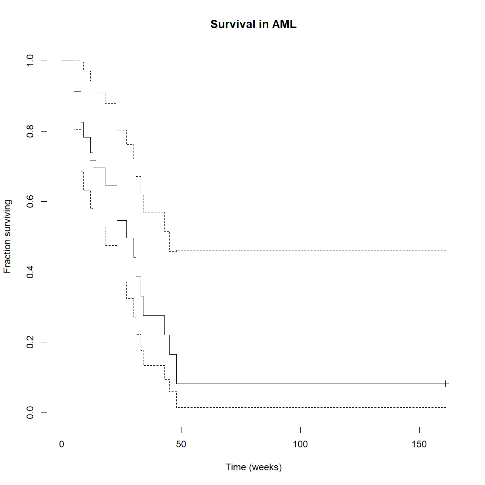

Survival Analysis
Overview
Class Date: 9/16/2021 -- In Class
Teaching: 90 min
Exercises: 30 minQuestions
How is time-to-event data structured?
What are the elements that separate time-to-event data from single-point observations?
How do we visualize time-to-event data?
What statistical tests are available for time-to-event data hypothesis testing?
Objectives
Describe the basic structure of time-to-event data.
Understand censoring and how it affects time-to-event data.
Use the
survivalpackage to generate survival curves and age-specific mortality plots.Use the Wilcoxon Rank-Sum (aka Mann-Whitney U) and Log-Rank tests to evaluate statistical differences between time-to-event observations between groups.
In Class
So far we have mostly been dealing with data that meets that basic assumptions of a t-test or other common statistical tests. In this class, we are going to look at a category of data that requires special consideration. Time-to-event data (e.g. survival or lifespan data) violates several assumptions made by many of our standard tests:
- It is not generally normally distributed.
- Observations are not independent (more below on this).
- Data is often censored.
In the following sections we will examine common methods for formatting, displaying, and analyzing time-to-event data, and how to implement these methods in R.
Missing data and censoring
When you are dealing with time-to-event data, subjects are selected (aka sampled) and observed repeatedly until some event occurs (or does not occur). This opens the possibility that a study will be completed without an observation of the event under study actually occurring. This can happen for a few reasons:
- A subject is removed from the study (e.g. a patient in a drug trial stops taking the drug on their own)
- A related event occurs that precludes occurrence of the event of interest (e.g. a patient in a cancer drug trial is killed in a car accident; this prevents the event of interest, “death from cancer” from occurring)
- A subject remains in the study, but the study concludes before the event of interest occurs
To deal with these cases, we include the subject in the study but use censoring to indicate that the event of interest was not observed between specific defined time points. There are three types of censoring:
- Right-censoring: the event of interest occurs after some time t, but the specific time of is unknown.
- e.g. a subject dies of an unrelated cause
- e.g. a subject is still alive at the end of the study
- e.g. a subject leaves the study prior to its conclusion
- Left-censoring: an individual’s entry date is unknown (e.g. birthdate in lifespan studies).
- e.g. a subject infected with a pathogen enters a study, but the infection date is unknown
- Interval-censoring: the event of interest occurred in a known interval, but the precise time is unknown.
- e.g. a patient is diagnosed with the disease of interest during a follow-up visit after a study concludes
Right-censoring is the most common. This is particularly true when using a model organism in the lab, where the birthdate or other entry criteria can be tightly controlled, but an individual exiting a study can happen for various reasons. We will only examine right-censoring in this class, but be aware of the other forms, particularly if you are dealing with data collected from human subjects.
Why not just exclude censored data?
One option for dealing with an unexpected event (e.g. your mouse escapes 18 months into your lifespan study) is to just leave out the data for that individual. This has at least two problems for your analysis:
- Bias: What if the unexpected event is correlated with you outcome of interest? For example, perhaps only mice that are still healthy and likely to have a long remaining lifespan will be capable of escaping at 18 months of age. By not considering these mice, you will shift the distribution of measured lifespan values toward shorter lifespan.
- Power: Because the procedure in these studies is to (1) select a sample, and (2) make repeated observations until the event occurs, we already have observations collected up until the time point when an individual is censored. Removing the individual from the analysis removes potentially valuable data (e.g. the mouse live at least 18 months). Including these individuals with proper censoring will increase your statistical power to detect changes.
Survival curves
The most common form of data presented for time-to-event data is the survival curve. The curve shows the fraction or percentage of the population surviving at a given time. The time measure can be age (as is the case for lifespan) or some other relevant defined point (e.g. diagnosis with a disease, cancer remission, time of treatment).

Of course, we generally don’t know the survival for every individual in the population and need to draw a best estimate from our sample data. To deal with this issue, we use two tools called the Life Table, to generate information about the survival characteristics over time, and Kaplan-Meier curves to draw approximate survival curves from sample data.
The life table
The Life Table is a systematic way to tabulate observations and estimate survival parameters based on sample data. A Life Table has the following basic information:

- \(t_0 =\) start time, relative to the time period of interest (e.g. for lifespan data, each individual’s birth is set to time 0, even if they were born on different dates)
- \(t =\) observation time
- \(d_t =\) number of events observed at at time t
- \(n_0 = \sum d_t =\) original sample size (number of individuals in the sample prior to censoring or events)
- \(n_t = n_0 - \sum_{x = 0}^{t-1} d_x =\) number of individuals at risk at time t (e.g. sampled, uncensored individuals with no event by time t)
- \(l_t = \frac{n_t}{n_0} =\) fraction of the sample remaining at risk by time t
- \(S(t) \approx l_t =\) survival function, the fraction of the population at risk (aka “surviving to”) time t
We estimate the survival function by plotting \(l_t\) vs. age \(t\). Let’s examine the survival of the US population as an example. The life table is stored in US2011.life.table.txt.
lt <- read.delim("./data/US2011.life.table.txt")
str(lt)
'data.frame': 101 obs. of 7 variables:
$ age: int 0 1 2 3 4 5 6 7 8 9 ...
$ qx : num 0.006058 0.000415 0.000264 0.000208 0.000167 ...
$ lx : int 100000 99394 99353 99327 99306 99289 99274 99261 99249 99239 ...
$ dx : chr "606" "41" "26" "21" ...
$ Lx : int 99470 99374 99340 99316 99298 99282 99268 99255 99244 99234 ...
$ Tx : int 7870915 7771445 7672071 7572731 7473415 7374117 7274835 7175567 7076312 6977068 ...
$ ex : num 78.7 78.2 77.2 76.2 75.3 74.3 73.3 72.3 71.3 70.3 ...
Note that what I called \(n_t\) this particular data set calls \(l_x\) (and that all subscripts are “x” instead of “t”). Some of the above variables (e.g. our \(l_t\)) are missing. To start, let’s rename the variables to match our convention and calculate \(l_t\):
# rename life table variables
names(lt) = c("t","qt","nt","dt","Lt","Tt","et")
# calculate l{t}
lt$lt = lt$nt/max(lt$nt)
head(lt)
t qt nt dt Lt Tt et lt
1 0 0.006058 100000 606 99470 7870915 78.7 1.00000
2 1 0.000415 99394 41 99374 7771445 78.2 0.99394
3 2 0.000264 99353 26 99340 7672071 77.2 0.99353
4 3 0.000208 99327 21 99316 7572731 76.2 0.99327
5 4 0.000167 99306 17 99298 7473415 75.3 0.99306
6 5 0.000151 99289 15 99282 7374117 74.3 0.99289
Now we can plot the survival curve:
plot(lt$t,lt$lt, type = "l",
main="US Survival 2011",
xlab="Age (years)",ylab="Fraction Surviving")

Great! That looks like a standard survival curve to me. We can see that median lifespan is around 85 years and maximum is out around 100. The tip of the tail (which won’t appear on this chart since we only has ~100,000 people out of ~300,000,000) is really out at 122 or so.
From the equation for \(l_t\), we can see that it depends on \(n_t\), which in turn depends on all of the previously observed events (\(d_0\) to \(d_t-1\)). Thus the survival function cannot be considered an variable with independent observations. This is one reason we can’t use a t-test to make comparisons. For that we need to look at a different aspect of time-to-event data. A complete life table will have a few more columns:

- \(p_t = l_{t+1}/l_t =\) probability that someone with no event at time t will still have no event by time t + 1.
- \(q_t = 1 - p_t =\) probability that someone with no event at time t will experience the event by time t + 1.
- \(\lambda(t) = -\frac{\delta}{dx} ln[S(x)] \approx -ln(p_t) =\) instantaneous rate at which the event occurs at time t; the slope of the log of the survival function. For survival data specifically, this is also called \(\mu_x =\) age-specific mortality.
The last variable, \(\lambda(t)\) is called the hazard function (aka hazard rate, \(h(x)\)), or in the context of survival data, age-specific mortality or force of mortality (\(\mu_x\)). Conceptually, age-specific mortality represents the chance of an individual dying at that specific age.
\(\lambda(t)\), while not normally distributed, does not depend on previous observations, and can thus be considered a variable for which observations are independent. This allows us to make statistical comparisons. Let’s look at how \(\lambda(t)\) behaves.
# calculate pt and lambdat
lt$pt = 1 - lt$qt
lt$lambdat = -log(lt$pt)
# plot age specific mortality -- does the shape look familiar?
plot(lt$t, lt$lambdat, type = "l",
main="US Age-Specific Mortality 2011",
xlab="Age (years)", ylab="Age-Specific Mortality")

Does that shape look familiar? It appears to increase exponentially with age. Try plotting the y-axis on a log-scale (using the log = "y" argument in plot; alternatively, you could plot log(lt$lambdat) on the y-axis):
plot(lt$t, lt$lambdat, type = "l", log="y",
main="US Age-Specific Mortality 2011",
xlab="Age (years)",
ylab="Age-Specific Mortality")

Despite the some odd behavior during the early part of life, age-specific mortality appears to increase linearly during the majority of adulthood. That looks like something we can model!
Minimum age-specific mortality
As an aside, what is up with that minimum point? At what age does that occur?
lt$t[which.min(lt$lambdat)][1] 10
What happens to humans at roughly 10 years of age? Puberty! Thinking from an evolutionary perspective, it makes sense that the minimum change of dying should occur at the point of maximum reproductive potential. Ability to reproduce is a primary driver of species survival, and remaining reproductive potential only decreases with increasing age.
Incidentally, this is one of the major categories of theory for why we age in the first place. It isn’t so much that aging is selected for, but that the decline in “remaining reproductive potential” decreases as we get older, and thus the selection pressure steadily reduces. If an allele gives us a boost to reproduction or health early in life, it may be selected for even if it causes a fatal disease later in life.
Kaplan-Meier curves
We never actually know the “real” shape of the survival curve for our population, or even our sample, because of the structure of time-to-event data. This is true for two reasons:
- We often have missing data that requires censoring (i.e. the event was never observed)
- Subjects are only observed at discrete time points, so we don’t have access to the exact time that the event occurred. We instead know that the event had not occurred at some time t - 1, but that the event had occurred by time t.
There is a type of survival curve estimator called the Kaplan-Meier curve which allows us to approximate the shape of the survival curve for a given set of time-to-event observations. Kaplan-Meier curves have the following properties.
- Estimates true survival curve when data is missing (i.e. when one or more observations is censored)
- Assumes that no deaths occur between observation times (i.e. approximates that each event occurred at the observation time, rather than at some unknown time between observations)
- Tick marks are used to indicate time at which a subject was censored for missing data.
- For the purposes of drawing the curve, censored individuals are included in the “total” or “at risk” sample size up until the time point where they were censored. After that point, the change in curve height for a new event occurrence is dependent on the reduced sample size with out the censored individual.
This is because the pool of patients remaining “at risk” for the event drops when either an event is experienced or when a patient is censored.

When an event occurs, the curve drops by a fraction of the remaining “at risk” pool at that time point. As patients are censored without an observed event, the remaining “at risk” pool decreases. Thus subsequent events drop the remaining % remaining by a larger and larger margin. A good step-by-step guide to how Kaplan-Meier curves are drawn can be found here.
Let’s look at our data from the inbred mouse aging study for an example. Make sure that the survival package is loaded, and read in the mouse lifespan data. For our purposes, let’s look specifically at the strain BUB/BnJ, which has a number of censored mice.
# load survival package
library("survival")
# read in inbred strain lifespan data
data.surv <- read.delim("data/inbred.lifespan.txt")
# grab the subset of data for BUB/BnJ
surv.bub <- data.surv[data.surv$strain == "BUB/BnJ",]
# check out the data
str(surv.bub)
'data.frame': 64 obs. of 5 variables:
$ strain : chr "BUB/BnJ" "BUB/BnJ" "BUB/BnJ" "BUB/BnJ" ...
$ sex : chr "f" "f" "f" "f" ...
$ animal_id : chr "174" "175" "176" "177" ...
$ lifespan_days: int 328 343 266 357 523 670 279 635 216 538 ...
$ censor : int 0 0 0 0 0 0 0 0 1 0 ...
For survival analysis, the survival packages uses an odd notation for simulating the survival curve. In order to include data censoring, instead of using lifespan_days directly as the dependent variable, we use the notation Surv(time, event status). This tells R that we have a set of censored survival data with observed event times (lifespan_days), and some mice that were censored and not observed to have died (censor). Let’s contrast the data format here to the life table that we looked at above:
- Life tables describe populations, providing information about the number or fraction of individuals in different categories, or other population-level information like age-specific mortality for individuals within that population.
- Mortality data like that provided in the inbred mouse aging dataset describes individuals, providing phenotype data for each individual.
A note on the lifespan variable. We have emphasized that the sampling method for survival data involves repeated binary observations (the event did/did not occur) at subsequent time points, but the mortality data simply provides a single data point for lifespan_days. The underlying assumption is that the individual was observed at all previous time points, but that the event of interest occurred at the reported time. If an individual was not censored (censor = 0), then we know the event occurred at that time point. If the individual was censored (censor = 1), then we know that the mouse was last observed alive at the reported time point.
In our case, we use the lifespan_days as the time that we observed the event, and censor as our status variable. An important note: what Surv() wants for status is whether the event occurred. In this particular data set, the event was assumed to occur unless something odd happened (e.g. the mouse escaped), so censor is “0” when the mouse died (the event occurred) and “1” when something else happened (e.g. the mouse was “censored” and removed from the study because death, the event, was never observed). Thus we need to tell R that censor == 0 means “the event occurred”.
The survfit() function builds the life table that we need for our analyses. We embed the Surv() object as the dependent variable in side the survfit() function. survfit() always needs an independent variable. If you want to just plot all of the data as a single curve, you can just give it “1”, which tells R not to subset the data before running the analysis:
# calculate life table for BUB/BnJ mice
survfit.bub <- survfit(Surv(lifespan_days, censor == 0) ~ 1, data=surv.bub)
# use summary() to look at the life table
summary(survfit.bub)
Call: survfit(formula = Surv(lifespan_days, censor == 0) ~ 1, data = surv.bub)
time n.risk n.event survival std.err lower 95% CI upper 95% CI
260 52 1 0.9808 0.0190 0.94414 1.000
266 51 1 0.9615 0.0267 0.91066 1.000
279 47 1 0.9411 0.0330 0.87852 1.000
287 46 1 0.9206 0.0381 0.84885 0.998
301 45 1 0.9002 0.0424 0.82076 0.987
307 44 1 0.8797 0.0461 0.79380 0.975
328 43 1 0.8592 0.0494 0.76772 0.962
341 42 1 0.8388 0.0523 0.74236 0.948
343 41 1 0.8183 0.0549 0.71759 0.933
354 40 2 0.7774 0.0592 0.66954 0.903
357 38 1 0.7570 0.0611 0.64616 0.887
366 37 1 0.7365 0.0628 0.62315 0.870
383 35 1 0.7155 0.0644 0.59969 0.854
426 34 1 0.6944 0.0659 0.57658 0.836
447 33 1 0.6734 0.0672 0.55380 0.819
455 32 1 0.6523 0.0683 0.53133 0.801
457 31 1 0.6313 0.0692 0.50916 0.783
493 30 1 0.6102 0.0701 0.48727 0.764
495 29 1 0.5892 0.0707 0.46566 0.746
523 28 1 0.5682 0.0713 0.44431 0.727
538 27 1 0.5471 0.0717 0.42322 0.707
551 26 1 0.5261 0.0719 0.40239 0.688
608 25 1 0.5050 0.0721 0.38180 0.668
621 24 1 0.4840 0.0721 0.36147 0.648
628 23 1 0.4629 0.0719 0.34138 0.628
635 22 1 0.4419 0.0717 0.32154 0.607
670 21 1 0.4209 0.0713 0.30195 0.587
678 20 1 0.3998 0.0708 0.28261 0.566
693 19 2 0.3577 0.0693 0.24472 0.523
722 17 1 0.3367 0.0683 0.22618 0.501
726 16 1 0.3156 0.0672 0.20792 0.479
768 15 1 0.2946 0.0660 0.18996 0.457
810 14 1 0.2736 0.0645 0.17230 0.434
818 13 1 0.2525 0.0629 0.15498 0.411
855 12 1 0.2315 0.0611 0.13801 0.388
867 11 1 0.2104 0.0590 0.12143 0.365
873 10 1 0.1894 0.0568 0.10526 0.341
874 9 1 0.1683 0.0542 0.08955 0.316
875 8 1 0.1473 0.0514 0.07438 0.292
888 7 1 0.1263 0.0481 0.05980 0.267
889 6 2 0.0842 0.0403 0.03297 0.215
904 4 1 0.0631 0.0353 0.02112 0.189
965 3 1 0.0421 0.0291 0.01084 0.163
1020 2 1 0.0210 0.0208 0.00303 0.146
1034 1 1 0.0000 NaN NA NA
Now that we have the survival function, the plot() function already knows what we want to do with it: plot the Kaplan-Meier curve:
# Plot the Kaplan-Meier curve
plot(survfit.bub, xlab = "Time (days)",
ylab="Fraction surviving",
conf.int=FALSE, # turn of confidence intervals
mark.time = TRUE, # mark time of censor
main="BUB/BnJ Survival")

We can also break the data down into the two sexes. We do this using the dependent variable at the survfit() step:
# calculate life table for BUB/BnJ mice with sex as an independent variable
survfit.bub.sex <- survfit(Surv(lifespan_days, censor == 0) ~ sex, data=surv.bub)
# use summary() to look at the life table
summary(survfit.bub.sex)
Call: survfit(formula = Surv(lifespan_days, censor == 0) ~ sex, data = surv.bub)
sex=f
time n.risk n.event survival std.err lower 95% CI upper 95% CI
266 24 1 0.9583 0.0408 0.88163 1.000
279 23 1 0.9167 0.0564 0.81250 1.000
328 22 1 0.8750 0.0675 0.75221 1.000
343 21 1 0.8333 0.0761 0.69681 0.997
357 20 1 0.7917 0.0829 0.64478 0.972
455 19 1 0.7500 0.0884 0.59531 0.945
457 18 1 0.7083 0.0928 0.54795 0.916
495 17 1 0.6667 0.0962 0.50240 0.885
523 16 1 0.6250 0.0988 0.45845 0.852
538 15 1 0.5833 0.1006 0.41598 0.818
551 14 1 0.5417 0.1017 0.37489 0.783
621 13 1 0.5000 0.1021 0.33513 0.746
628 12 1 0.4583 0.1017 0.29668 0.708
635 11 1 0.4167 0.1006 0.25954 0.669
670 10 1 0.3750 0.0988 0.22373 0.629
678 9 1 0.3333 0.0962 0.18930 0.587
722 8 1 0.2917 0.0928 0.15636 0.544
726 7 1 0.2500 0.0884 0.12502 0.500
810 6 1 0.2083 0.0829 0.09551 0.454
818 5 1 0.1667 0.0761 0.06813 0.408
867 4 1 0.1250 0.0675 0.04337 0.360
904 3 1 0.0833 0.0564 0.02211 0.314
965 2 1 0.0417 0.0408 0.00612 0.284
1034 1 1 0.0000 NaN NA NA
sex=m
time n.risk n.event survival std.err lower 95% CI upper 95% CI
260 28 1 0.9643 0.0351 0.89794 1.000
287 24 1 0.9241 0.0517 0.82807 1.000
301 23 1 0.8839 0.0632 0.76836 1.000
307 22 1 0.8438 0.0720 0.71386 0.997
341 21 1 0.8036 0.0790 0.66280 0.974
354 20 2 0.7232 0.0892 0.56792 0.921
366 18 1 0.6830 0.0929 0.52328 0.892
383 16 1 0.6403 0.0964 0.47678 0.860
426 15 1 0.5977 0.0989 0.43205 0.827
447 14 1 0.5550 0.1007 0.38893 0.792
493 13 1 0.5123 0.1016 0.34732 0.756
608 12 1 0.4696 0.1017 0.30718 0.718
693 11 2 0.3842 0.0995 0.23125 0.638
768 9 1 0.3415 0.0972 0.19552 0.597
855 8 1 0.2988 0.0939 0.16137 0.553
873 7 1 0.2561 0.0897 0.12894 0.509
874 6 1 0.2134 0.0843 0.09843 0.463
875 5 1 0.1708 0.0775 0.07016 0.416
888 4 1 0.1281 0.0689 0.04463 0.368
889 3 2 0.0427 0.0417 0.00628 0.290
1020 1 1 0.0000 NaN NA NA
Note that survfit() builds separate life tables for male and female mice. Now we can use plot() to generate the Kaplan-Meier curves for our new survfit object:
# Plot the Kaplan-Meier curve
plot(survfit.bub.sex, xlab = "Time (days)",
ylab="Fraction surviving",
col = c("red","blue"),
conf.int=FALSE, # turn of confidence intervals
mark.time = TRUE, # mark time of censor
main="BUB/BnJ Survival")
# add legend
legend("topright", lty = 1,
col = c("red","blue"),
legend = c("f","m"))

The log-rank test
Now that we can visualize our lifespan data, how do we conduct a hypothesis test to compare different groups? The most common test for lifespan data is the log-rank Test (aka logrank or Mantel-Cox Test). The log-rank test makes the assumption that the survival functions (\(S(t)\)) are the same for the two groups under the null hypothesis (essentially, this means that any censoring is correlated with survival). What the test does it:
-
Assume that the survival is equal and that any censoring does not impact the survival function.
-
At each observation point, calculate the difference in the number of observed events between comparison groups.
-
Sum the differences across time points to calculate the test statistics: \(z = \frac{\sum_{j=1}^{J} (O_{1j} - O_{2j})}{\sqrt{\sum_{j=1}^{J} V_j}}\)
-
This test statistic is approximately normally distributed and can be used to calculate the probability that the observed difference represents a sample from the null distribution (or not) at a given \(\alpha\).
In R, the survdiff() function performs a log-rank test using the same dependent and independent variable format as survfit(). Let’s use it to see if there are differences in lifespan between male and female BUB/BnJ mice:
logrank.bub <- survdiff(Surv(lifespan_days, censor == 0) ~ sex, data = surv.bub)
logrank.bub
Call:
survdiff(formula = Surv(lifespan_days, censor == 0) ~ sex, data = surv.bub)
N Observed Expected (O-E)^2/E (O-E)^2/V
sex=f 32 24 24.1 0.000882 0.00189
sex=m 32 24 23.9 0.000893 0.00189
Chisq= 0 on 1 degrees of freedom, p= 1
So there is no difference in lifespan between male and female BUB/BnJ mice. There is a quirk with the survdiff() function in R. How do you extract the P-value? Looking at the survdiff object, there doesn’t seem to be a clear way to extract it directly:
str(logrank.bub)
List of 6
$ n : 'table' int [1:2(1d)] 32 32
..- attr(*, "dimnames")=List of 1
.. ..$ groups: chr [1:2] "sex=f" "sex=m"
$ obs : num [1:2] 24 24
$ exp : num [1:2] 24.1 23.9
$ var : num [1:2, 1:2] 11.3 -11.3 -11.3 11.3
$ chisq: num 0.00189
$ call : language survdiff(formula = Surv(lifespan_days, censor == 0) ~ sex, data = surv.bub)
- attr(*, "class")= chr "survdiff"
Similar to how a t-test uses the t-distribution (which is a modified normal distribution) to calculate a P-value based on the area under a well-defined portion of the probability density curve, the log-rank test calculates a different statistics, called \(\chi\), and uses another well-defined distribution, the \(\chi^2\) distribution, to calculate P-values.
For an obscure and mathematically dense reason, the creator of the survdiff() function decided not to directly report the P-value in the output of the function. However, he did include the calculated value of \(\chi^2\), and R includes a function that defines the \(\chi^2\) distribution, so we can relatively easily calculate it for ourselves.
# extract the value of the chi-squared statistic from the survdiff object
# we also need the number of comparison groups, which defines the degrees
# of freedom for the test (this is stored in the `n` variable)
chisq.bub <- logrank.bub$chisq
n.bub <- logrank.bub$n
# use the chisq statistic to calculate the P-value; the second argument
# is degrees of freedom (df), calculated from n. By default, and based on
# the way the distribution is used in the function, qchisq() returns the
# reciprocol of the P-value (1 - P). Setting `lower.tail = F` reverses
# this and gives the P-value
P.bub <- pchisq(chisq.bub, length(n.bub) - 1, lower.tail = F)
P.bub
[1] 0.9653378
Incidentally, we can similarly calculate the P-value from a t statistic (reported in the t.test() function) in place of chisq and the pt() function in place of the pchisq() function as above.
Summary of survival package notation in R
Surv(age, event)
- Creates a “survival object” that is basically just a function that indicates the comparison we are interested in making
age= age that the event occurredevent= had the event (e.g. death) occurred at observation (1 = yes, 0 = no)
survfit(Surv(age, event) ~ groups)
- Generates a life table from a survival object, subsetted by
groups- Used for plotting survival curves
groups= variable(s) used to subset for group comparison (e.g. sex, genotype)
survdiff(Surv(age, event) ~ groups))
- Conducts a log-rank test on
Surv(age, event)betweengroups
Exercises
Treating colon cancer with levamisole
The
survivalpackage includes a colon cancer dataset looking at the efficacy of treating patients diagnosed with colon cancer with levamisole as either a monotherapy or in combination with 5-FU. Take a look at thecolondataset:library("survival") # make sure you have the library loaded str(colon)'data.frame': 1858 obs. of 16 variables: $ id : num 1 1 2 2 3 3 4 4 5 5 ... $ study : num 1 1 1 1 1 1 1 1 1 1 ... $ rx : Factor w/ 3 levels "Obs","Lev","Lev+5FU": 3 3 3 3 1 1 3 3 1 1 ... $ sex : num 1 1 1 1 0 0 0 0 1 1 ... $ age : num 43 43 63 63 71 71 66 66 69 69 ... $ obstruct: num 0 0 0 0 0 0 1 1 0 0 ... $ perfor : num 0 0 0 0 0 0 0 0 0 0 ... $ adhere : num 0 0 0 0 1 1 0 0 0 0 ... $ nodes : num 5 5 1 1 7 7 6 6 22 22 ... $ status : num 1 1 0 0 1 1 1 1 1 1 ... $ differ : num 2 2 2 2 2 2 2 2 2 2 ... $ extent : num 3 3 3 3 2 2 3 3 3 3 ... $ surg : num 0 0 0 0 0 0 1 1 1 1 ... $ node4 : num 1 1 0 0 1 1 1 1 1 1 ... $ time : num 1521 968 3087 3087 963 ... $ etype : num 2 1 2 1 2 1 2 1 2 1 ...
Note from the structure and
?colondescription forcolonthat the data set includes two events encoded by theetypevariable: recurrence (1) and > death (2). Thestatusvariable encodes the occurance of an event (1 = event, 0 = no even or censor) attime.rxindicates treatment group.Based on this dataset, do we have evidence that is levamisole is effective at > increasing colon cancer survival? What is the impact of 5-FU?
Solution
Start by taking a look at the survival curves to get a sense of the data:
# the study recorded two event types: death and recurrence. We are # interested in survival, so we will pull the subset that reports death # (etype = 2) colon.death <- colon[colon$etype == 2,] # build a survfit object subsetting the data from colon by treatment survfit.colon <- survfit(Surv(time, status) ~ rx, data = colon.death) # plot the Kaplan-Meier curves for the two data sets, showing censored # individuals as markers plot(survfit.colon, col = c("black", "blue", "red"), mark.time = T, xlab = "Time since treatment", ylab = "Fraction surviving") legend(x = "bottomleft", legend = c("observation","levamisole","levamisole + 5-FU"), # order labels in the order of levels(colon.death) lty = 1, col = c("black", "blue", "red")) # generate lines of the right colors
Looks promising. Let’s run the statistics. Note that, like the t-test, the log-rank test only works between two groups. Let’s examine the impact of each treatment versus control, and then the combined treatement versus levamisole alone.
# use survdiff() to run log-rank test between groups after subsetting # for each comparison logrank.lev.vs.ctrl <- survdiff(Surv(time, status) ~ rx, data = colon.death[colon.death$rx %in% c("Obs", "Lev"),]) logrank.comb.vs.ctrl <- survdiff(Surv(time, status) ~ rx, data = colon.death[colon.death$rx %in% c("Obs", "Lev+5FU"),]) logrank.comb.vs.lev <- survdiff(Surv(time, status) ~ rx, data = colon.death[colon.death$rx %in% c("Lev", "Lev+5FU"),]) logrank.lev.vs.ctrlCall: survdiff(formula = Surv(time, status) ~ rx, data = colon.death[colon.death$rx %in% c("Obs", "Lev"), ]) N Observed Expected (O-E)^2/E (O-E)^2/V rx=Obs 315 168 166 0.0282 0.057 rx=Lev 310 161 163 0.0287 0.057 Chisq= 0.1 on 1 degrees of freedom, p= 0.8logrank.comb.vs.ctrlCall: survdiff(formula = Surv(time, status) ~ rx, data = colon.death[colon.death$rx %in% c("Obs", "Lev+5FU"), ]) N Observed Expected (O-E)^2/E (O-E)^2/V rx=Obs 315 168 141 5.12 9.97 rx=Lev+5FU 304 123 150 4.82 9.97 Chisq= 10 on 1 degrees of freedom, p= 0.002logrank.comb.vs.levCall: survdiff(formula = Surv(time, status) ~ rx, data = colon.death[colon.death$rx %in% c("Lev", "Lev+5FU"), ]) N Observed Expected (O-E)^2/E (O-E)^2/V rx=Lev 310 161 137 4.24 8.21 rx=Lev+5FU 304 123 147 3.95 8.21 Chisq= 8.2 on 1 degrees of freedom, p= 0.004# now we can extract each P-value using the chisq statistic and distribtion P.lev.vs.ctrl <- pchisq(logrank.lev.vs.ctrl$chisq, length(logrank.lev.vs.ctrl$n) - 1, lower.tail = F) P.comb.vs.ctrl <- pchisq(logrank.comb.vs.ctrl$chisq, length(logrank.comb.vs.ctrl$n) - 1, lower.tail = F) P.comb.vs.lev <- pchisq(logrank.comb.vs.lev$chisq, length(logrank.comb.vs.lev$n) - 1, lower.tail = F) # and correct for the multiple comparison P.colon <- c(P.lev.vs.ctrl, P.comb.vs.ctrl, P.comb.vs.lev) P.colon.corrected <- p.adjust(P.colon, method = "holm") P.colon.corrected[1] 0.811352105 0.004784595 0.008345494
This data does not support efficacy for levamisole as a monotherapy for colon cancer. However, the P-values are both < 0.05, even following correction for multiple tests for the combination of levamisol and 5-FU relative to both untreated controls and levamisole alone. Thus we have evidence supporting efficacy for the combined therapy.
Key Points
Time-to-event data includes a hybrid of an observation (event vs. no event) and a series of observation times.
Time-to-event data analysis violates several assumptions made by standard tests, including normality and independence of observations.
Censoring complicates analysis and is not handled by standard statistical tests, including the Wilcoxon Rank-Sum test. Instead, we use the Log-Rank test for basic survival comparisons.
Unlike the survival function, age-specific mortality at any given time does not depend on previous observations.